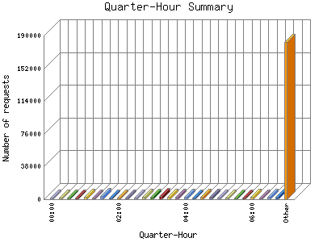

Analog 5.24
Analog 5.24 Report Magic for Analog 2.13
Report Magic for Analog 2.13The Quarter-Hour Summary shows an overview of site activity over the course of a day, broken down into fifteen-minute intervals. If your report has enough traffic this will give you a detailed graph of your site's load throughout the day.

| Quarter-Hour | Number of requests | Percentage of the requests | |
|---|---|---|---|
| 1. | 00:00 | 2,313 | 0.92% |
| 2. | 00:15 | 2,159 | 0.87% |
| 3. | 00:30 | 1,921 | 0.77% |
| 4. | 00:45 | 2,065 | 0.82% |
| 5. | 01:00 | 2,511 | 1% |
| 6. | 01:15 | 1,858 | 0.74% |
| 7. | 01:30 | 3,572 | 1.43% |
| 8. | 01:45 | 1,992 | 0.80% |
| 9. | 02:00 | 2,328 | 0.93% |
| 10. | 02:15 | 2,284 | 0.91% |
| 11. | 02:30 | 2,040 | 0.81% |
| 12. | 02:45 | 2,386 | 0.96% |
| 13. | 03:00 | 2,633 | 1.6% |
| 14. | 03:15 | 3,751 | 1.50% |
| 15. | 03:30 | 2,603 | 1.4% |
| 16. | 03:45 | 2,792 | 1.11% |
| 17. | 04:00 | 2,364 | 0.94% |
| 18. | 04:15 | 1,996 | 0.80% |
| 19. | 04:30 | 2,505 | 1% |
| 20. | 04:45 | 2,980 | 1.20% |
| 21. | 05:00 | 2,131 | 0.86% |
| 22. | 05:15 | 1,941 | 0.78% |
| 23. | 05:30 | 2,133 | 0.86% |
| 24. | 05:45 | 1,899 | 0.77% |
| 25. | 06:00 | 3,241 | 1.30% |
| 26. | 06:15 | 2,183 | 0.88% |
| 27. | 06:30 | 2,611 | 1.4% |
| 28. | 06:45 | 2,399 | 0.97% |
| 29. | 07:00 | 2,756 | 1.10% |
| 30. | 07:15 | 2,272 | 0.91% |
| 31. | 07:30 | 2,337 | 0.93% |
| 32. | 07:45 | 2,973 | 1.20% |
| 33. | 08:00 | 2,669 | 1.7% |
| 34. | 08:15 | 2,865 | 1.14% |
| 35. | 08:30 | 6,170 | 2.48% |
| 36. | 08:45 | 5,045 | 2.2% |
| 37. | 09:00 | 5,220 | 2.10% |
| 38. | 09:15 | 3,744 | 1.50% |
| 39. | 09:30 | 3,328 | 1.33% |
| 40. | 09:45 | 2,831 | 1.13% |
| 41. | 10:00 | 2,171 | 0.87% |
| 42. | 10:15 | 2,472 | 0.100% |
| 43. | 10:30 | 2,339 | 0.93% |
| 44. | 10:45 | 5,781 | 2.31% |
| 45. | 11:00 | 3,392 | 1.36% |
| 46. | 11:15 | 2,749 | 1.10% |
| 47. | 11:30 | 3,010 | 1.20% |
| 48. | 11:45 | 2,995 | 1.20% |
| 49. | 12:00 | 2,074 | 0.83% |
| 50. | 12:15 | 2,718 | 1.9% |
| 51. | 12:30 | 2,289 | 0.91% |
| 52. | 12:45 | 2,586 | 1.3% |
| 53. | 13:00 | 2,232 | 0.90% |
| 54. | 13:15 | 3,592 | 1.43% |
| 55. | 13:30 | 2,455 | 0.99% |
| 56. | 13:45 | 2,055 | 0.82% |
| 57. | 14:00 | 2,041 | 0.81% |
| 58. | 14:15 | 2,335 | 0.93% |
| 59. | 14:30 | 2,366 | 0.94% |
| 60. | 14:45 | 2,351 | 0.94% |
| 61. | 15:00 | 3,395 | 1.36% |
| 62. | 15:15 | 3,406 | 1.37% |
| 63. | 15:30 | 3,360 | 1.34% |
| 64. | 15:45 | 2,215 | 0.89% |
| 65. | 16:00 | 3,414 | 1.37% |
| 66. | 16:15 | 2,173 | 0.88% |
| 67. | 16:30 | 2,710 | 1.9% |
| 68. | 16:45 | 2,437 | 0.98% |
| 69. | 17:00 | 2,114 | 0.84% |
| 70. | 17:15 | 1,789 | 0.71% |
| 71. | 17:30 | 2,209 | 0.89% |
| 72. | 17:45 | 2,414 | 0.97% |
| 73. | 18:00 | 2,253 | 0.90% |
| 74. | 18:15 | 1,902 | 0.77% |
| 75. | 18:30 | 2,770 | 1.10% |
| 76. | 18:45 | 2,743 | 1.10% |
| 77. | 19:00 | 2,470 | 0.99% |
| 78. | 19:15 | 2,615 | 1.4% |
| 79. | 19:30 | 2,727 | 1.10% |
| 80. | 19:45 | 1,683 | 0.68% |
| 81. | 20:00 | 2,158 | 0.87% |
| 82. | 20:15 | 2,149 | 0.87% |
| 83. | 20:30 | 2,281 | 0.91% |
| 84. | 20:45 | 2,065 | 0.82% |
| 85. | 21:00 | 1,611 | 0.64% |
| 86. | 21:15 | 3,062 | 1.22% |
| 87. | 21:30 | 2,334 | 0.93% |
| 88. | 21:45 | 1,832 | 0.73% |
| 89. | 22:00 | 1,943 | 0.78% |
| 90. | 22:15 | 1,933 | 0.78% |
| 91. | 22:30 | 2,079 | 0.83% |
| 92. | 22:45 | 2,576 | 1.3% |
| 93. | 23:00 | 2,131 | 0.86% |
| 94. | 23:15 | 2,273 | 0.91% |
| 95. | 23:30 | 2,341 | 0.93% |
| 96. | 23:45 | 2,370 | 0.94% |
This report was generated on November 17, 2025 01:09.
Report time frame April 8, 2024 11:04 to November 16, 2025 04:46.
| Web statistics report produced by: | |
| Analog 5.24 | Report Magic for Analog 2.13 |